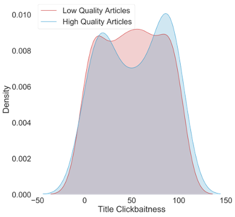
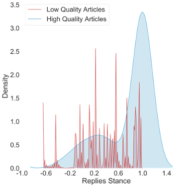
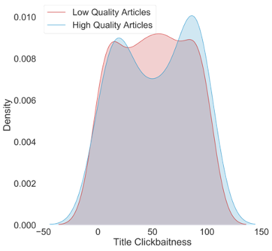
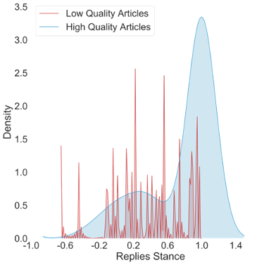

In a nutshell
SciLens is a framework for evaluating the quality of scientific news articles based on heterogeneous indicators.
These indicators derive from: i) the content of articles, where we consider metrics such as clickbaitness, sentiment, and readability, and distinguish between attributed and unattributed quotes,
ii) the scientific context of articles, where we measure the semantic textual similarity and the web-graph proximity to the related scientific literature, and
iii) the social media context of articles, where we measure the audience's reach and stance.
SciLens combines these indicators with expert reviews in a unified environment, bridging the gap between traditional and computational journalism.
This augmented view of the articles has provably helped non-expert users to acquire better consensus about the quality of scientific news articles.
The code of SciLens, the anonymized data (i.e., the social media postings, news articles, and scientific papers) in raw and clean format, as well as the anonymized expert and non-expert user evaluations, are made publickly available.
 



Publications
[WWW '19] P. Smeros, C. Castillo, K. Aberer. SciLens: Evaluating the Quality of Scientific News Articles Using Social Media and Scientific Literature Indicators. [pdf, bib, slides]
[VLDB '20] A. Romanou, P. Smeros, C. Castillo, K. Aberer. SciLens News Platform: A System for Real-Time Evaluation of News Articles. [pdf, bib, demo]